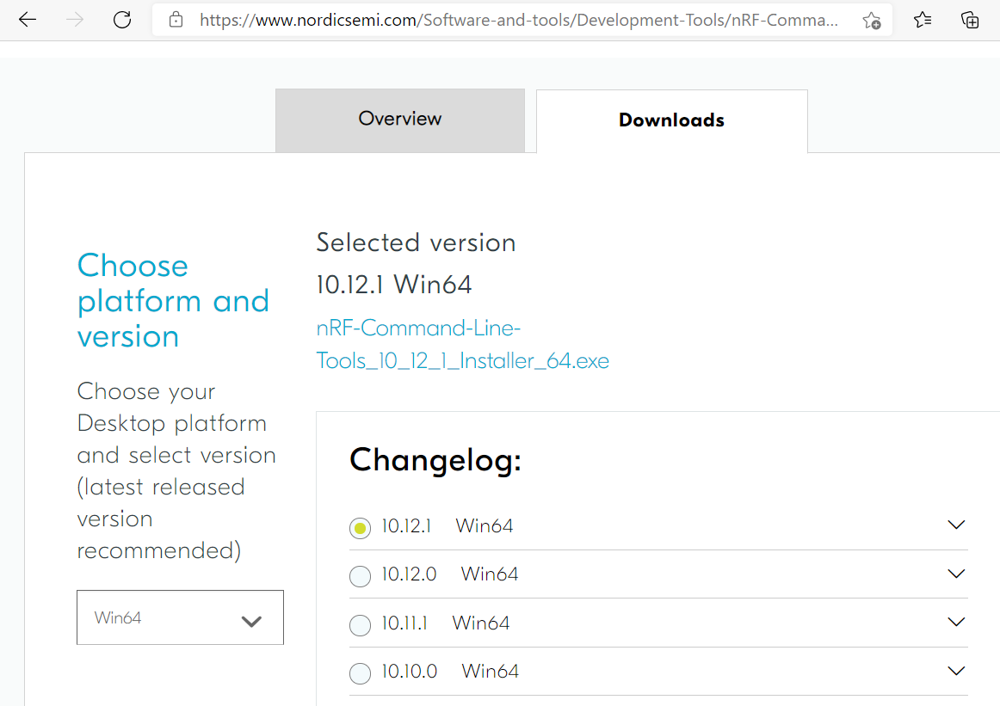
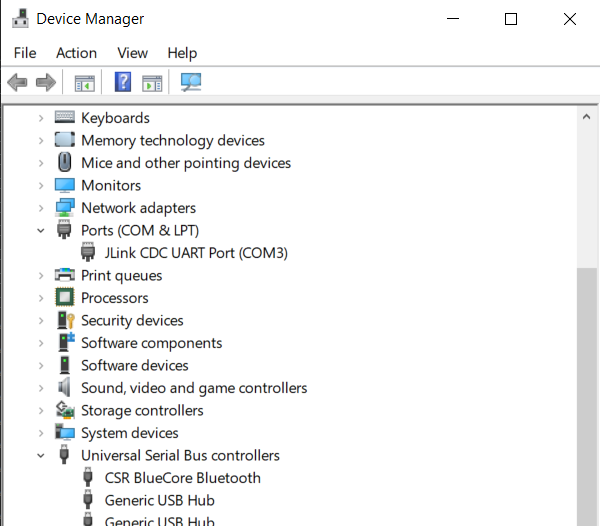
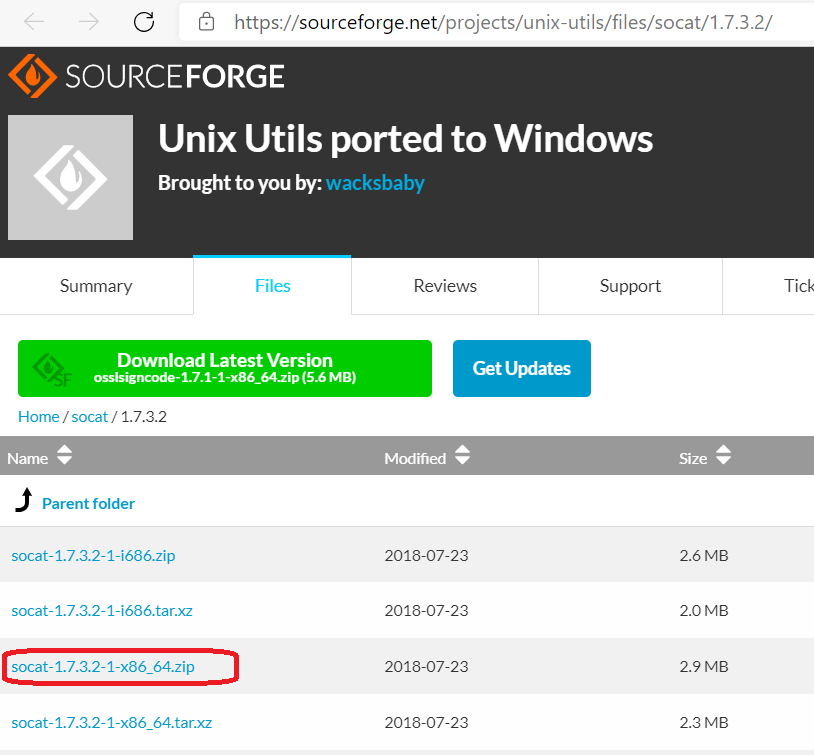
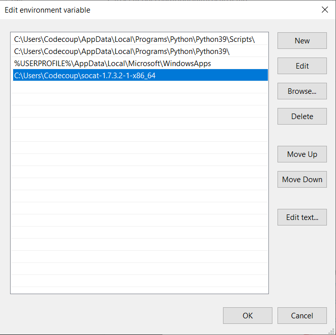
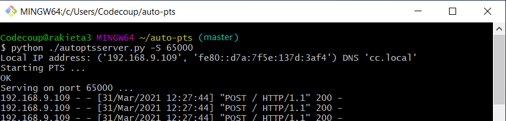
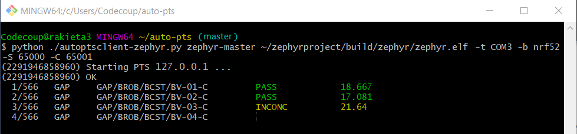
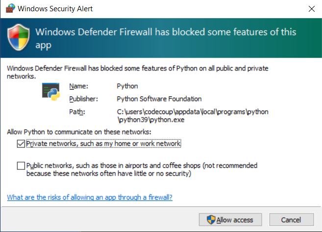

AutoPTS on Windows 10 with nRF52 board
This tutorial shows how to setup AutoPTS client and server to run both on Windows 10. We use WSL1 with Ubuntu only to build a Zephyr project to an elf file, because Zephyr SDK is not available on Windows yet. Tutorial covers only nrf52840dk.
Update Windows and drivers
Update Windows in:
Start -> Settings -> Update & Security -> Windows Update
Update drivers, following the instructions from your hardware vendor.
Install Python 3
Download and install Python 3. Setup was tested with versions >=3.8. Let the installer add the Python installation directory to the PATH and disable the path length limitation.


Install Git
Download and install Git. During installation enable option: Enable experimental support for pseudo consoles. We will use Git Bash as Windows terminal.

Install PTS 8
Install latest PTS from https://www.bluetooth.org. Remember to install drivers from installation directory “C:/Program Files (x86)/Bluetooth SIG/Bluetooth PTS/PTS Driver/win64/CSRBlueCoreUSB.inf”

Note
Starting with PTS 8.0.1 the Bluetooth Protocol Viewer is no longer included. So to capture Bluetooth events, you have to download it separately.
Setup Zephyr project for Windows
Perform Windows setup from Getting Started Guide.
Install nrftools
On Windows download latest nrftools (version >= 10.12.1) from site https://www.nordicsemi.com/Software-and-tools/Development-Tools/nRF-Command-Line-Tools/Download and run default install.
{kind=link}

Connect devices


Flash board
In Device Manager find COM port of your nrf board. In my case it is COM3.
{kind=link}

In Git Bash, go to zephyrproject
cd ~/zephyrproject
Build the auto-pts tester app
west build -p auto -b nrf52840dk/nrf52840 zephyr/tests/bluetooth/tester/
You can display flashing options with:
west flash --help
and flash board with built earlier elf file:
west flash --no-rebuild --board-dir /dev/ttyS2 --elf-file ~/zephyrproject/build/zephyr/zephyr.elf
Note that west does not accept COMs, so use /dev/ttyS2 as the COM3 equivalent, /dev/ttyS2 as the COM3 equivalent, etc.(/dev/ttyS + decremented COM number).
Setup auto-pts project
In Git Bash, clone project repo:
git clone https://github.com/auto-pts/auto-pts.git
Go into the project folder:
cd auto-pts
Install required python modules:
pip3 install --user wheel
pip3 install --user -r autoptsserver_requirements.txt
pip3 install --user -r autoptsclient_requirements.txt
Install socat.exe
Download and extract socat.exe from https://sourceforge.net/projects/unix-utils/files/socat/1.7.3.2/ into folder ~/socat-1.7.3.2-1-x86_64/.
{kind=link}

Add path to directory of socat.exe to PATH:
{kind=link}

Running AutoPTS
Server and client by default will run on localhost address. Run server:
python ./autoptsserver.py -S 65000
{kind=link}

Note
If the error “ImportError: No module named pywintypes” appeared after the fresh setup, uninstall and install the pywin32 module:
pip install --upgrade --force-reinstall pywin32
Run client:
python ./autoptsclient-zephyr.py zephyr-master ~/zephyrproject/build/zephyr/zephyr.elf -t COM3 -b nrf52 -S 65000 -C 65001
{kind=link}

At the first run, when Windows asks, enable connection through firewall:
{kind=link}

Troubleshooting
“When running actual hardware test mode, I have only BTP TIMEOUTs.”
This is a problem with connection between auto-pts client and board. There are many possible causes. Try:
Clean your auto-pts and zephyr repos with
Warning
This command will force the irreversible removal of all uncommitted files in the repo.
git clean -fdx
then build and flash tester elf again.
If you have set up Windows on virtual machine, check if guest extensions are installed properly or change USB compatibility mode in VM settings to USB 2.0.
Check, if firewall in not blocking python.exe or socat.exe.
Check if board sends ready event after restart (hex 00 00 80 ff 00 00). Open serial connection to board with e.g. PuTTy with proper COM and baud rate. After board reset you should see some strings in console.
Check if socat.exe creates tunnel to board. Run in console
socat.exe -x -v tcp-listen:65123 /dev/ttyS2,raw,b115200
where /dev/ttyS2 is the COM3 equivalent. Open PuTTY, set connection type to Raw, IP to 127.0.0.1, port to 65123. After board reset you should see some strings in console.